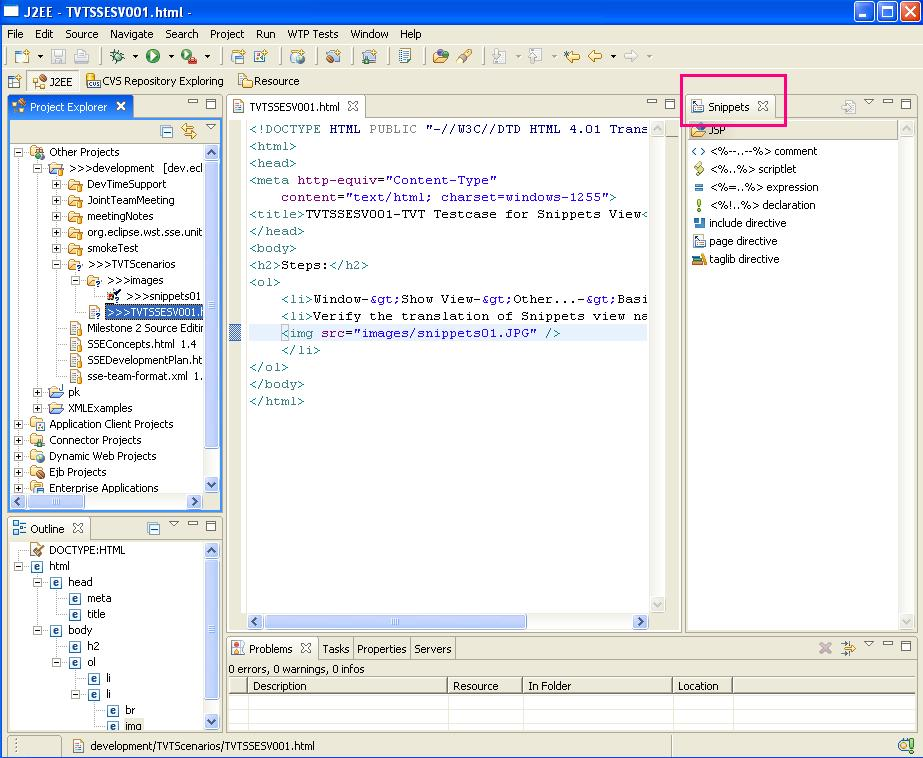
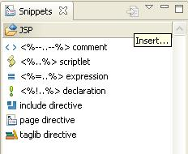
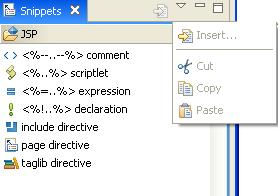
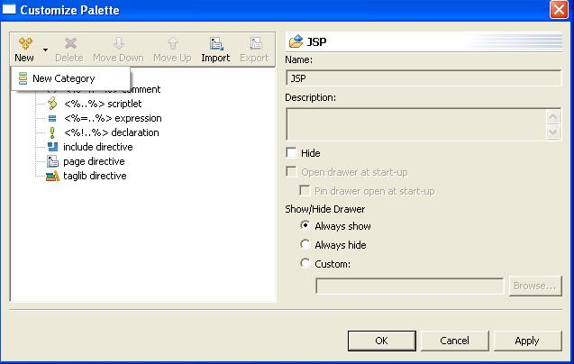
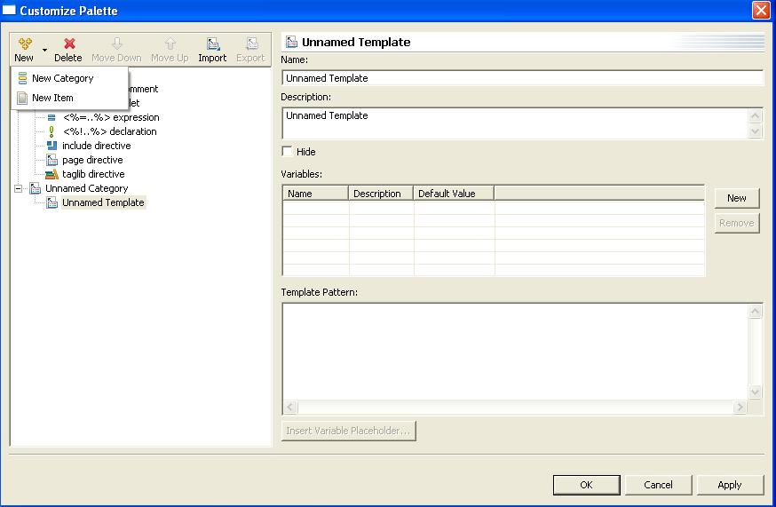
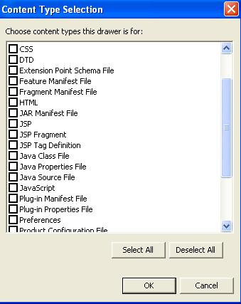
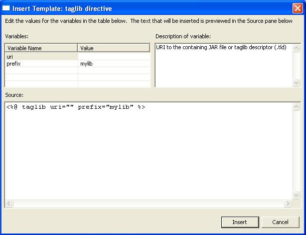
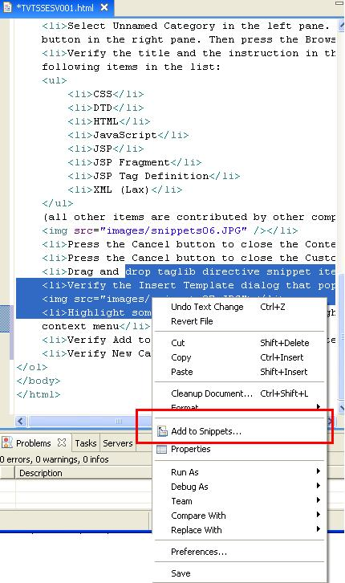
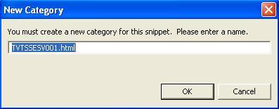

Snippets View
Prerequisites:
- Open the J2EE Perspective if it is not already open.(Window
->Open Perspective -> J2EE)
- Create a new J2EE web project if it does not already exist. (File
->New ->J2EE Web Project)
- Create and open a JSP file if it does not already exist (File
->New ->Other ->Web ->JSP)
Steps:
- Window->Show View->Other...->Basic->Snippets
- Verify the translation of Snippets view name. And the JSP snippets
category and all its items.

- Move the mouse over the toolbar button.
- Verify the hover text that appears: Insert...

- Click on the View Menu (the triangle button).
- Verify the menu items:

- Press the right mouse button in the empty area below the drawers to
bring up the context menu. Select Customize...
- Verify the following translations in the Customize Palette dialog:
- New Category
- Import
- Export
- Show/Hide Drawer
- Always show
- Always hide
- Custom:
- Browse...
Note: All other translations are covered by other GEF.

- Select New->New Category. Then Select New->New Item.
- Verify New Item is translated as well as all translations in the
right pane except Name:, Description:, and Hide (which are covered by
GEF).

- Select Unnamed Category in the left pane. Select the Custom: radio
button in the right pane. Then press the Browse... button.
- Verify the title and the instruction in the dialog. Also verify the
following items in the list:
- CSS
- DTD
- HTML
- JavaScript
- JSP
- JSP Fragment
- JSP Tag Definition
- XML (Lax)
(all other items are contributed by other components)

- Press the Cancel button to close the Content Type Selection dialog.
- Press the Cancel button to close the Customize Palette dialog.
- Drag and drop taglib directive snippet item to open JSP editor.
- Verify the Insert Template dialog that pops up.

- Highlight some text in JSP editor and right-click to bring up
context menu
- Verify Add to Snippets... context menu item.

- Verify New Category dialog.
